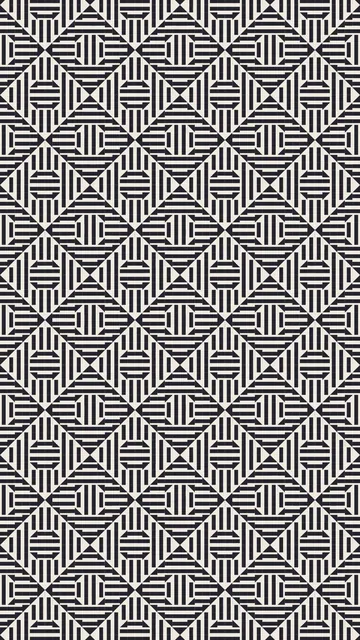
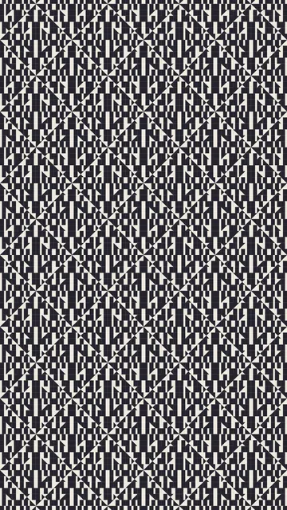
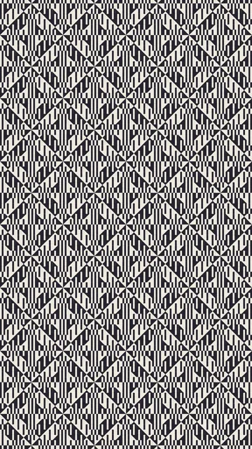
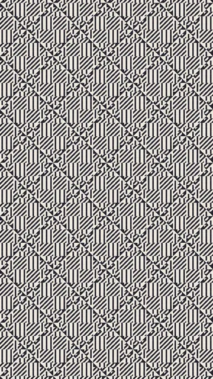
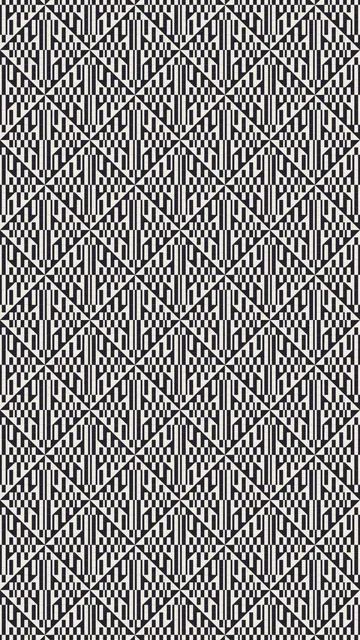

Coleção B121

Outras línguas: Français · English · Español · ไทย · 简体中文 · Русский · हिन्दी
Grupo 2 de 6 · 5 animações
Faixas de larguras desiguais: o ritmo lê-se na proporção. Nada é carregado antes de um clique, e só uma animação é reproduzida de cada vez. Pode pré-visualizar cada animação a outra velocidade ou noutras cores.





B3x desenha exatamente o mesmo que BA33: não tem animação própria.